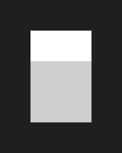

Code
A new chapter for coding.

Built on OpenCodeBuilding on OpenCode to connect coding workflows with VOLPAROSSA's cooperative compute foundation.
Integration in developmentExplore CodeProject repository · GitHub
The library of tomorrow
Open applications. Shared infrastructure. Built together.
In developmentAn open invitation
Built on open source. Extended by VOLPAROSSA.
A new chapter for coding.

Built on OpenCodeBuilding on OpenCode to connect coding workflows with VOLPAROSSA's cooperative compute foundation.
Integration in developmentExplore CodeProject repository · GitHub
Your memories, a shared foundation.
Built on ImmichBuilding on Immich to connect photo libraries with VOLPAROSSA's shared storage foundation.
Integration in developmentExplore ImageProject repository · GitHub
More room for what comes next.
Built on OpenCloudBuilding on OpenCloud to connect files and collaboration with VOLPAROSSA's shared infrastructure.
Integration in developmentExplore CloudProject repository · GitHub
Upstream interface examples, not completed VOLPAROSSA integrations. Image sources & credits.
All applicationsSteps that we can show
· Cloud
A scoped trial uploaded a file through the original Files interface and recovered it after restart and the loss of one storage peer.
Read the trial record· Weather
Installed Overmorrow Android retrieved real forecast data through peers in an emulator, then refreshed from cache.
Read the trial record· Code
OpenCode completed a bounded public-fixture task with a real local model, approved edits and tests, in about 37 minutes.
Read the trial recordThese results apply to their recorded revisions and test conditions. Complete applications, joined storage maintenance and confidential peer computation remain in development. There is no supported end-user release.
There is a place for you here
Bring a question, a skill or a different perspective.
Help make shared technology useful to everyone.